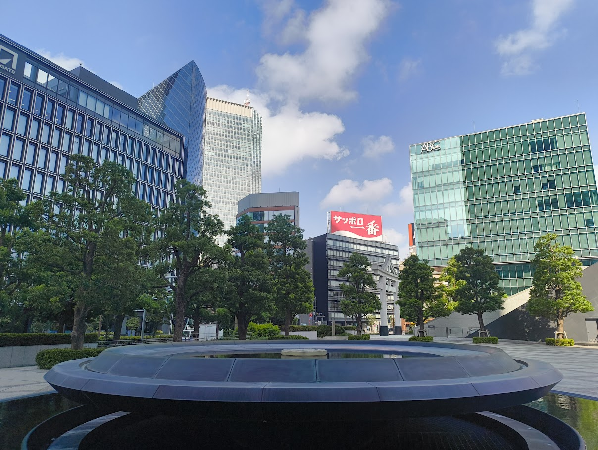
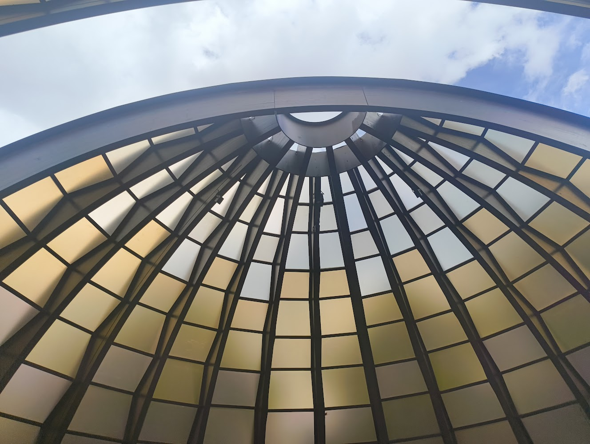
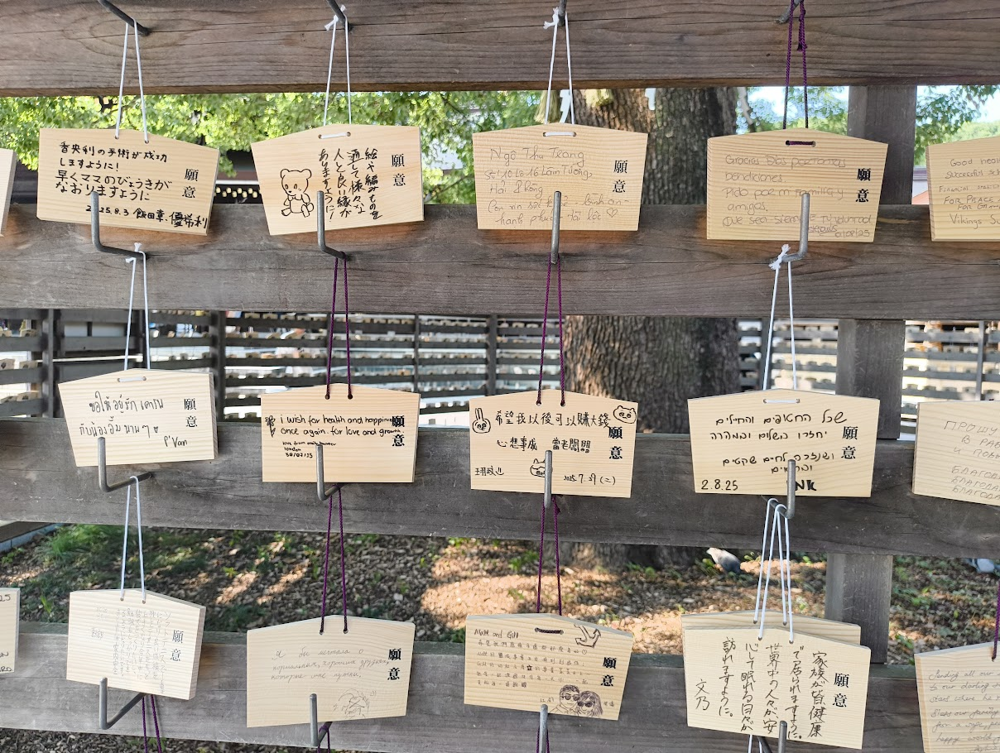
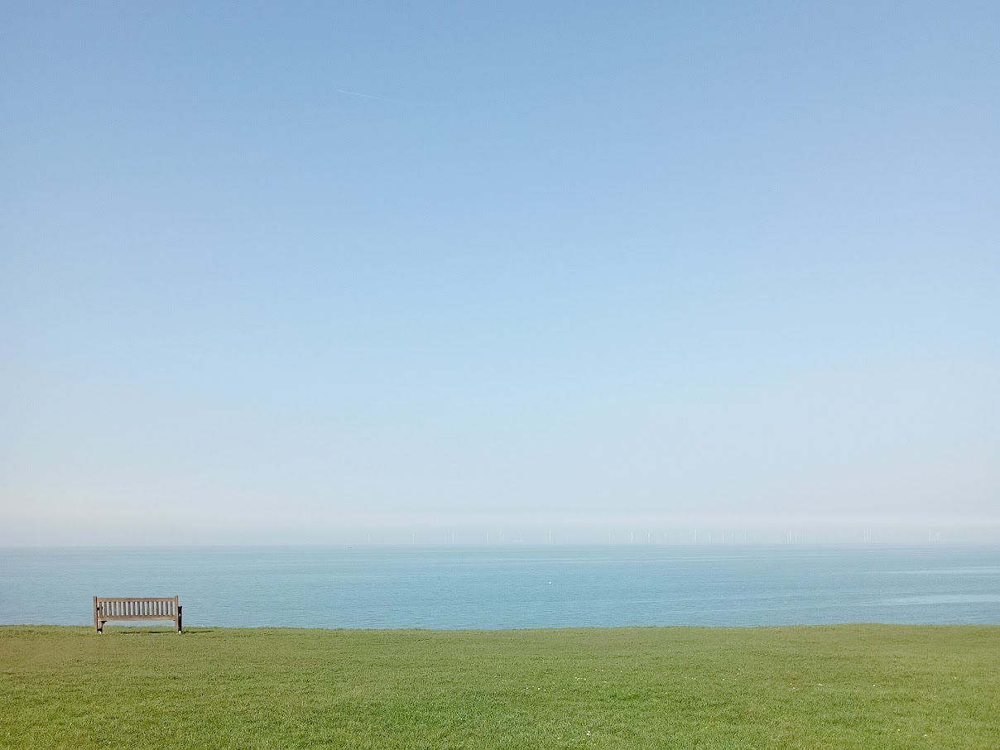
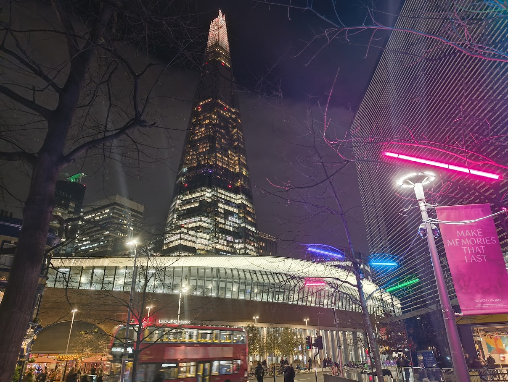
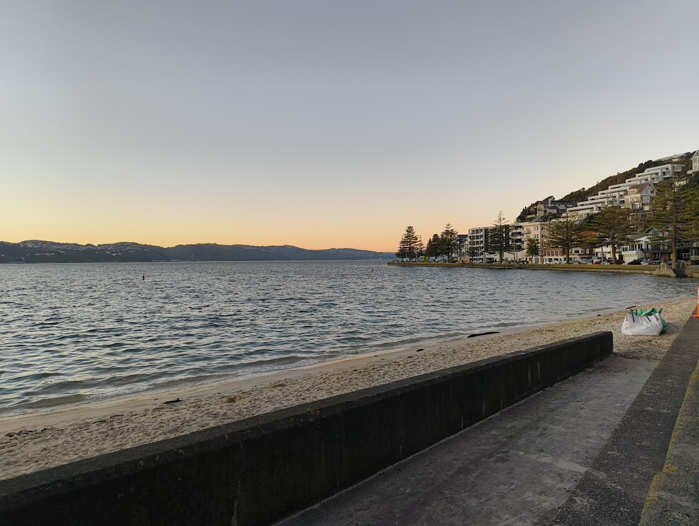

Lessons to be learned from the AI boyfriend apocalypse
A short essay exploring the market dynamics of foundational AI models, and the potential human implications.

I am a sixth former studying Economics, Maths, Further Maths and Physics. I lead Code for Impact, a non-profit for young people creating social impact with code.
I'm working on research projects on Universal Basic Income, fiscal policy in the UK, and the cost-effectiveness of campaigns to influence government policy
I develop games, websites and programming projects when I have cool ideas and to explore my interests
Exploring architecture, nature, urbanism and history through the lenses of my Nothing Phone (2a)
Notes, essays, and unfinished thoughts all live on my Substack
A short essay exploring the market dynamics of foundational AI models, and the potential human implications.




